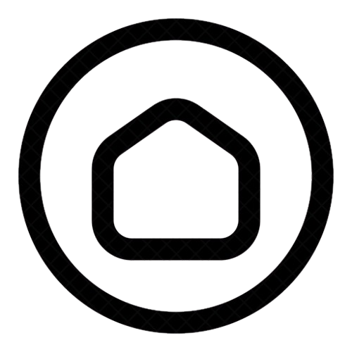

Complete Study Guide
| Question | Answer |
|---|---|
| First word played by the wife? | JINX |
| What does the narrator blame his wife for? | Unfulfillment / Boredom |
| What fate does he wish upon her? | Death |
| Initial feeling towards his wife? | Hatred |
| Narrator's habit while playing? | Chewing his tiles |
| How does he cheat? | Palming / Swapping |
| Figure of speech at the ending? | Irony |
| Wife's demeanor? | Placid / Calm |
| Central theme? | Resentment / Fate |
| Figure of speech in the title? | Hyperbole / Irony |
| Common relationship problem? | Miscommunication |
| Narrative style? | First-person |
| Tone of the story? | Sinister / Dark |
"I hope that they are bees they fly into wifes throat"
Illustrates the narrator's malicious intent and the transition of his thoughts from mere annoyance to lethal fantasy.
"i gasp with surprise and the B that i was chewing on gets lodges i my throat"
Represents the poetic irony of the story, where the narrator's own habit and the word he played lead to his own demise.
What does the narrator wish to do instead of playing Scrabble?
The narrator expresses a desire to do something more exciting or violent, specifically mentioning he would rather be "climbing a mountain" or "kicking a hole in a radiator."
How does the narrator hope to use the game piece to harm his wife?
He wishes he could use the physical tiles as weapons, specifically imagining "throwing the 'L' at her" or having the letters manifest as physical objects (like bees) to attack her.
What is ironic about the story's ending?
The irony lies in the fact that the narrator spends the entire game plotting his wife's death through the "magic" of the words, only to be killed by the very word he played and his own habit of chewing on the tiles.
What happens when the narrator plays the word "QUAKE"?
As soon as the word is played, a literal earthquake occurs, shaking the room and proving that the words played on the board are becoming reality.
What makes the narrator petty and vindictive?
He is defined by his intense hatred for his wife over minor inconveniences, his internal insults regarding her appearance, and his willingness to cheat and wish for her death just because he is bored.
What does the story suggest about the concept of karma?
The story suggests that karma is swift and literal; the narrator's murderous intentions and his cheating ultimately "turn" on him, ensuring that the death he designed for his wife becomes his own fate.
What does the narrator resent his wife for?
Blame for unfulfilling life, internal monologue, Scrabble as outletThe narrator resents his wife because he views her as the primary cause of his unfulfilling and stagnant life. Through his bitter internal monologue, he describes her as a person whose very existence — her movements, her silence, and even the way she drinks tea — infuriates him. He blames her for the "safe," boring life they lead, which he feels is a prison. He uses the game of Scrabble to vent this resentment, mentally insulting her as he picks his tiles. His hatred is so deep that he begins to use the game as a vessel for his murderous wishes, hoping that the words he plays will somehow manifest into a way to eliminate her and escape his misery.
How does the setting reflect the mood and narrative of Death by Scrabble?
Shifting atmosphere, heat as rising anger, death inside a homeThe setting is crucial in reflecting the narrator's deteriorating mental state. The oppressive heat of the Sunday afternoon serves as a physical symbol of his rising anger and frustration; as the temperature climbs, so does his blood pressure and his urge to kill. The atmosphere is thick with physical discomfort, making the silence of the marriage feel heavy and tense rather than peaceful. Most notably, the story subverts the traditional idea of "home." Instead of being a safe, comforting place, the domestic setting becomes a claustrophobic trap where the narrative driving force is not love, but death. The shift from a quiet afternoon to a scene of literal supernatural disaster mirrors the narrator's internal shift from silent resentment to active, lethal intent.
What makes the narrator believe that the Scrabble words are coming to life, and how does he test this out?
Consequences of words played, testing with "FLY"The narrator begins to believe the game is supernatural when he notices a direct correlation between the consequences of the words played and reality. For example, when the word "EXPLODES" is played, the air conditioning unit fails with a loud bang. He becomes pleased and exhilarated by this discovery, realizing he might have a magical weapon against his wife. To test this theory out, he intentionally plays the word FLY. Almost immediately, an insect begins to buzz around the room, confirming his suspicion. This empowers him to play even more dangerous words like "QUAKE," leading him to believe he is in total control of her fate, unaware that the board's power applies to him as well.
Website Designed by
IBADUR RAHMAN SIDDIQUI
12G